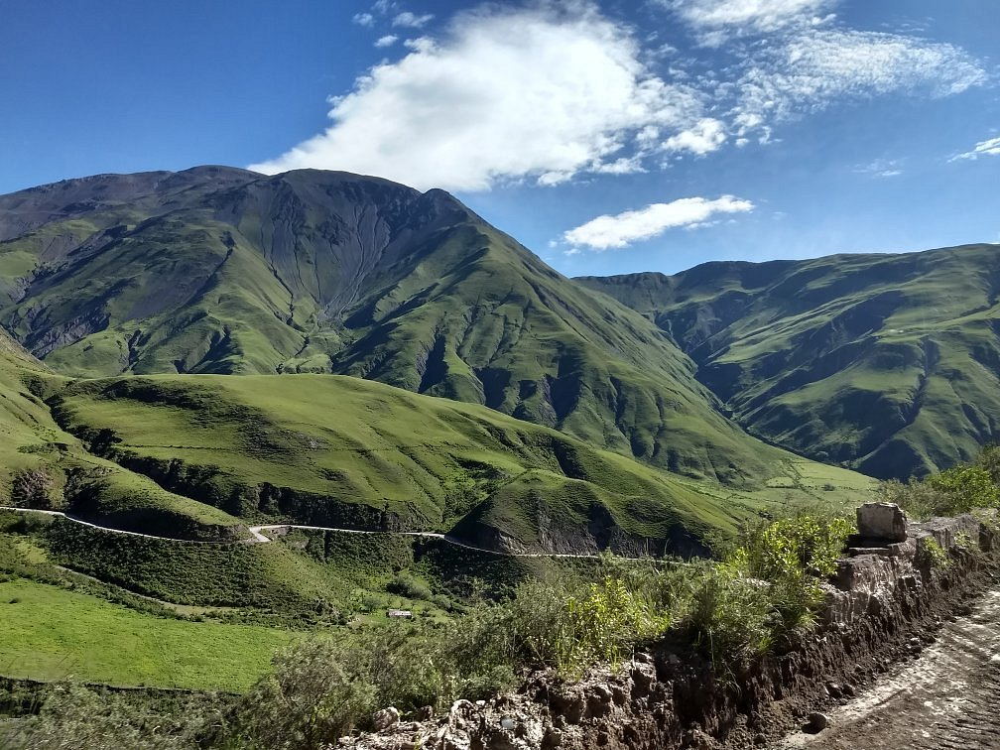
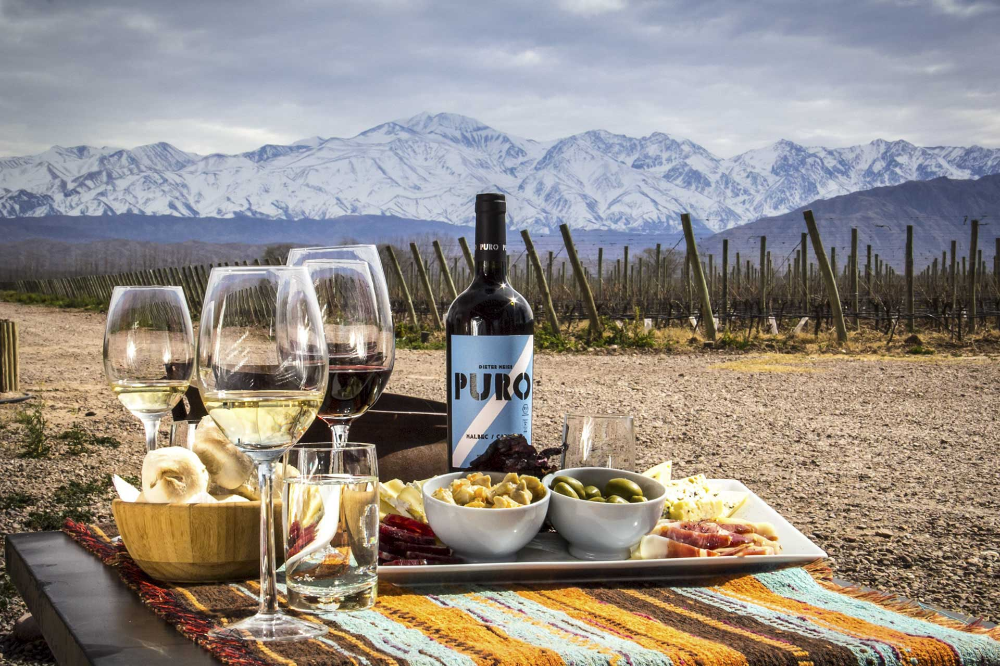
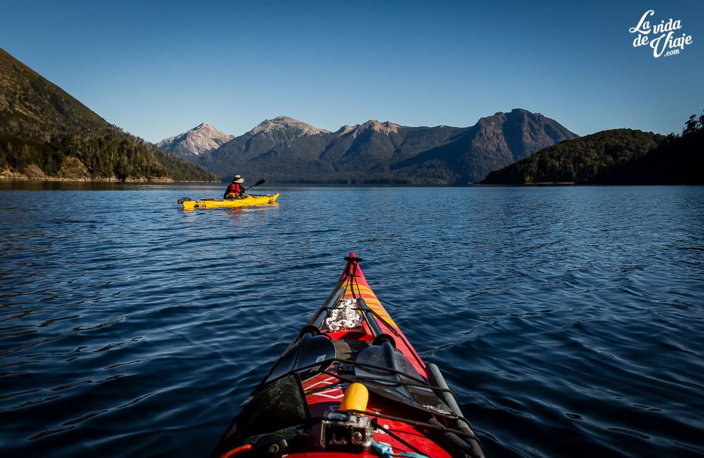
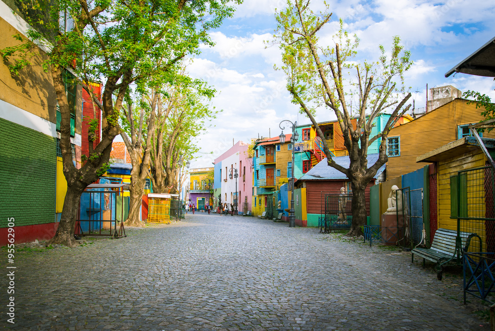

¡EXPERIENCIAS DESTACADAS!

WALKING TOUR CUESTA DEL OBISPO
Viva la experiencia de la Cuesta del Obispo paseo a pie en la Montaña.
Con una excursión de día completo que le ofrece
una experiencia extraordinaria en el impresionante paisaje del norte de Argentina.
Viaje desde Salta hasta la Cuesta del Obispo y ascienda la empinada montaña en autobús. Llegue hasta la cima y
siga
a su guía camino
de tierra y carreteras pavimentadas en esta legendaria ruta. Disfrute de las vistas de los
profundos desfiladeros, formaciones rocosas esculturales y cóndores salvajes en un recorrido que es apto para la
mayoría de personas en forma.

RECORRIDO VINÍCOLA CON ALMUERZO INCLUIDO
Mendoza es la región vinícola más grande y famosa de Argentina.
Famosa por sus malbec, así como cabernet sauvignon y chardonnay.
En esta excursión para grupos pequeños, disfrute de una cata de vinos íntima y visitará tres bodegas diferentes,
incluida una bodega boutique.
Pruebe una gran variedad de vinos argentinos en catas guiadas por expertos de catas de vino y deguste un almuerzo
gourmet de cinco platos, cada uno acompañado de vinos.
- Cata de vinos guiada en tres bodegas
- Delicioso almuerzo de 5 platos de cocina gourmet y vino de Mendoza
- Traslado de ida y vuelta sin complicaciones a su hotel de Mendoza
- Grupos reducidos con un máximo de 8 personas

PASEO EN KAYAK LAGO NAHUEL HUAPI
Métase en el agua del lago Nahuel Huapi cerca de Bariloche.
No se pierda esta excursión de 7 horas en kayak por la costa.
Reme hacia pintorescas cascadas, playas desiertas, islas aisladas, y escarpadas costas rodeadas por los picos
andinos
mientras explora este majestuoso cuerpo de agua a bordo de un ágil kayak.
Todo el equipo de kayak, además de un almuerzo está incluido.
- Explore la Patagonia desde una perspectiva diferente: en un kayak
- Reme a la isla Centinela o más profundo en la rama Tristeza
- Almuerzo, bebidas y todo el equipo de kayak incluido.
- Un pequeño grupo limitado a siete asegura una experiencia personalizada.

WALKING TOUR CAMINITO BUENOS AIRES
Acérquese al corazón palpitante de Buenos Aires con este recorrido a pie por La Boca.
Un dinámico barrio de clase trabajadora a lo largo del río Riachuelo.
Los aspectos más destacados incluyen visitar las chozas de colores brillantes y las tiendas de artistas callejeros
que rodean el callejón Caminito,
el Museo Benito Quinquela Martín y el estadio Alberto J. Armando de forma inusual, también conocido como "La
Bambonera", sede del fútbol local Boca Juniors.